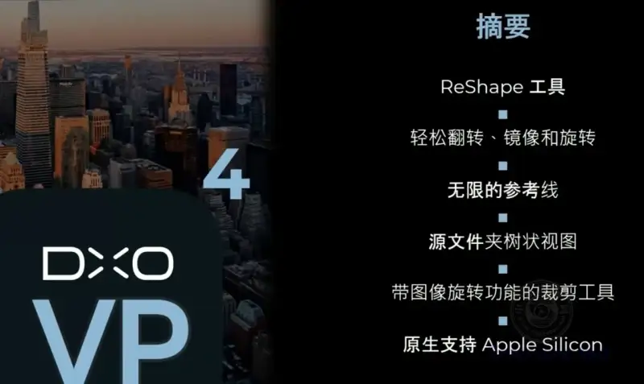
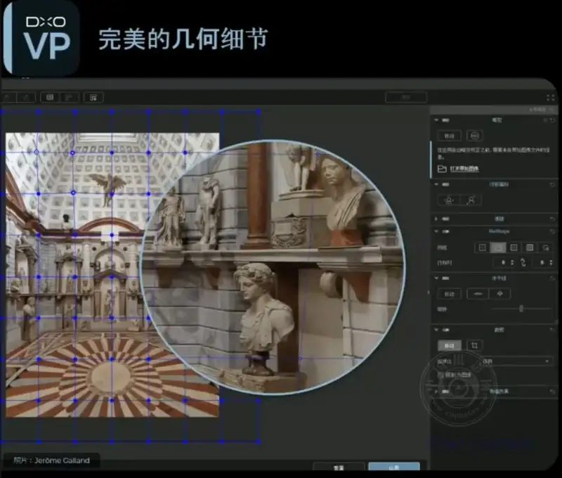
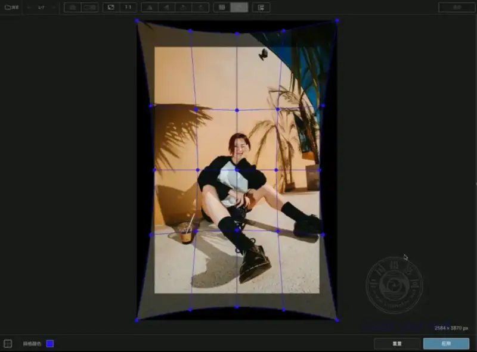

Published: 2022-10-13
Original link: https://www.cnphotos.net/academy/show-101.html
DxO ViewPoint 4 is software that gives photographers full control over perspective, geometry, and image quality. It comes with many new tools and updates. These include the new ReShape tool for local adjustments, improved cropping and rotation, new guide lines for precise alignment, an easier-to-use interface, and full support for Apple Silicon.

Paris, France: DxO Labs is one of the most innovative companies in photo-editing software. Today it announced that DxO ViewPoint 4 is now available. It is a unique and powerful program for correcting geometry and perspective. With the tools in ViewPoint 4, photographers can fix composition and optical flaws in new ways. They can restore the balance of their subjects.
The new version runs as a stand-alone program or as a tool panel inside DxO PhotoLab. It also runs as a plug-in for Adobe Photoshop, Adobe Photoshop Elements, and Adobe Lightroom Classic. The program has a new ReShape tool. It lets users reshape specific areas of an image. It improves cropping and rotation. It adds guide lines for the most precise adjustments. It shows a new interface for a smoother user experience. It also gives full support for Apple Silicon devices.
Use the New ReShape Tool to Perfect Every Detail
The most striking part of DxO ViewPoint 4 is the new ReShape tool. Its power to reshape and repair single areas of an image outshines competing software. You can fix unwanted details such as bent architecture and distorted patterns. This gives your images more impact and better balance. The ReShape tool has a customizable grid and many control points. They ensure precise work, and the adjustments are fast and intuitive.

Fabrizio Dei Tos is a DxO product manager. He said: 'We see ViewPoint 4 as a new stage in DxO's ongoing pursuit of optical and imaging perfection. The ReShape tool is an excellent way to reshape local details. It is a strong helper for photographers. The other upgrades in ViewPoint 4 extend and improve its ease of use. So whether you fine-tune architecture images, keep landscape photos free of distortion, or improve group photos, it meets your needs.'
Improve Photo Quality With a Smarter, Simpler Method
Other upgrades let you flip and mirror images quickly. The 'Crop' and 'Horizon' tools are now better integrated for fast and easy adjustments. More guide-line options make vertical and horizontal lines more accurate. A redesigned toolbar gives a better user experience.

Price and Availability
DxO ViewPoint 4 (Windows and macOS) is now available from the DxO website (https://shop.dxo.com/zh-cn/) for 693 yuan.
Owners of DxO ViewPoint 3 can upgrade for 413 yuan. To upgrade, customers log in to their account at https://shop.dxo.com/login_upgrade.php/en.
A license for DxO ViewPoint 4 does not require a subscription.
The DxO website offers a full one-month trial of DxO ViewPoint 4: https://www.dxo.com/zh-cn/dxo-viewpoint/.